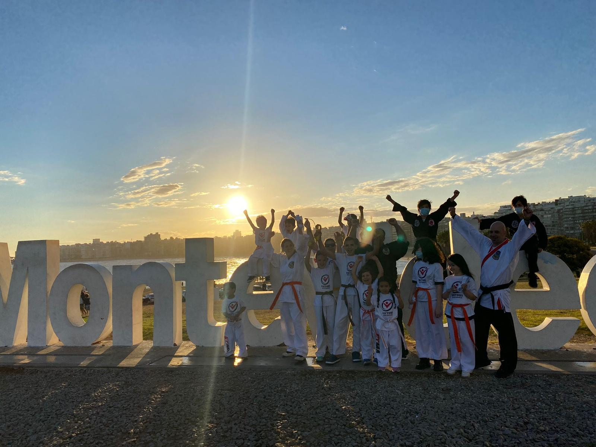
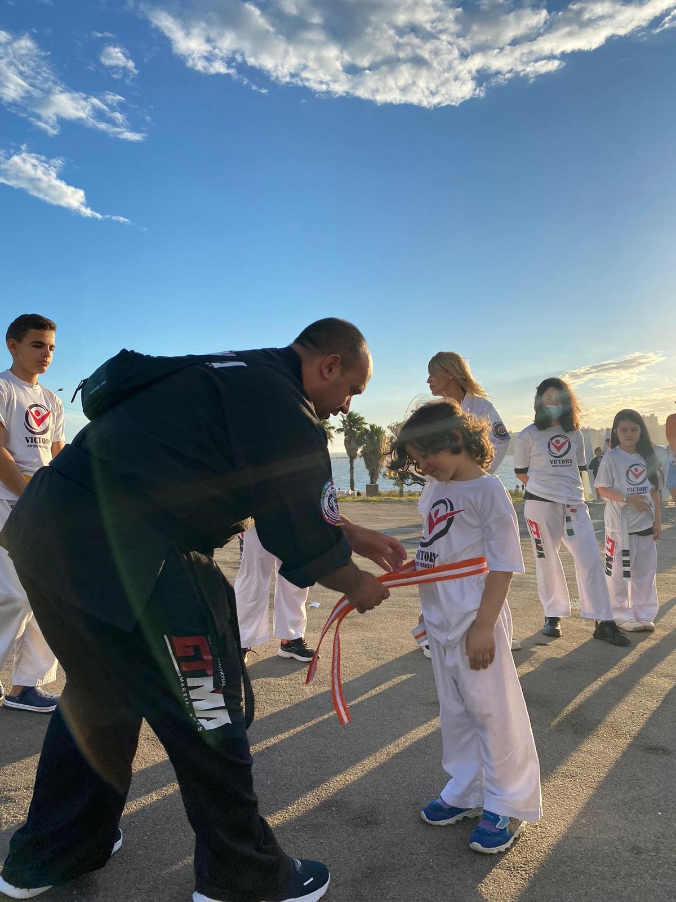
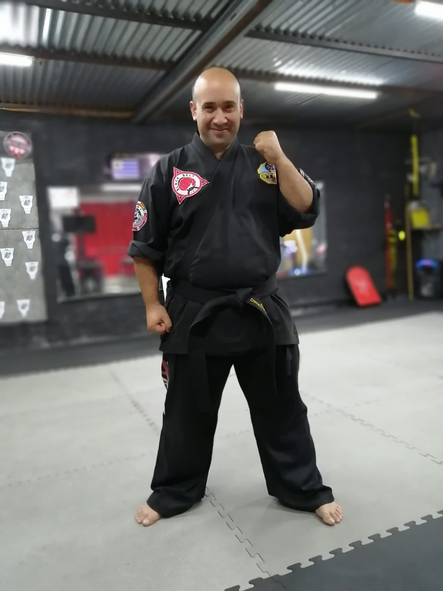
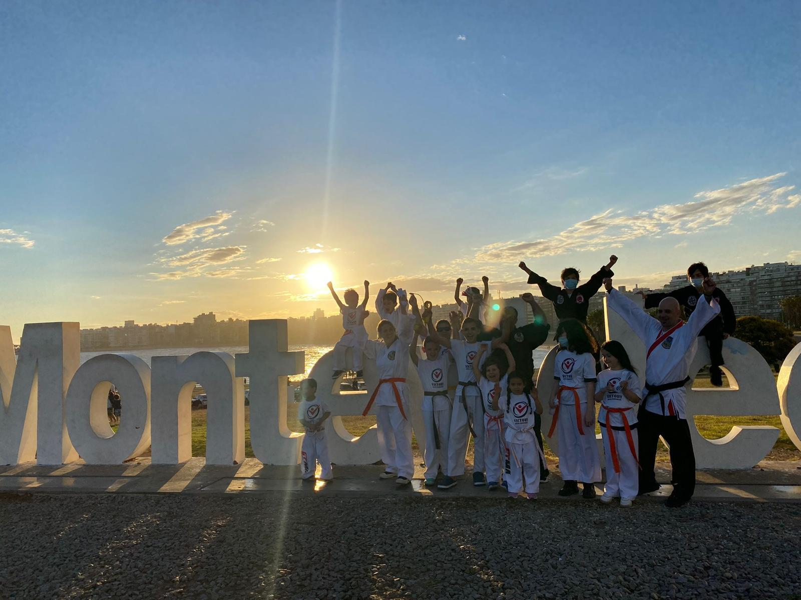
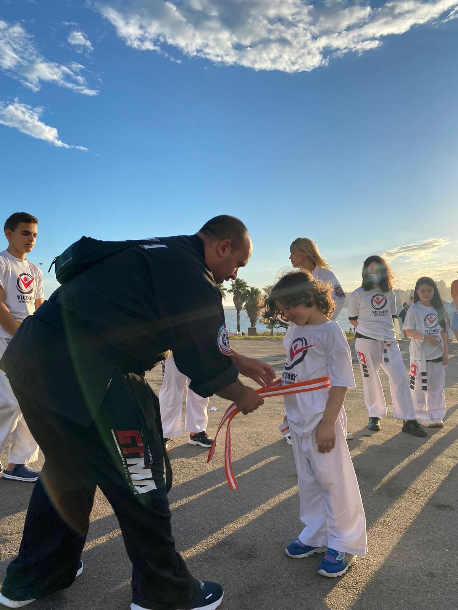
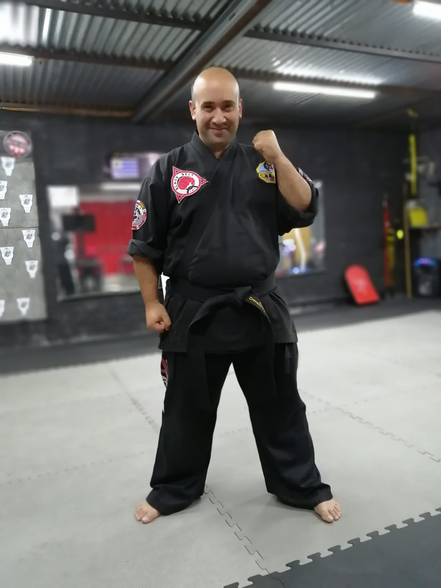

Sobre Nosotros
¡AYUDAMOS A LOS PADRES A CRIAR LÍDERES SEGUROS Y AYUDAMOS A LOS ADULTOS A ALCANZAR SU VERDADERO POTENCIAL! Desde el año 2000, Victory Artes Marciales ha estado ayudando a las personas a encontrar su victoria personal a través del fitness, la familia y la diversión. NUESTRA MISIÓN INSPIRAR, EDUCAR Y DESARROLLAR A LOS NIÑOS, LAS FAMILIAS Y LAS COMUNIDADES PARA QUE ALCANCEN SU MÁXIMO POTENCIAL. Más allá de alcanzar la aptitud física y practicar la autodefensa, nuestra filosofía de artes marciales da forma a seres humanos exitosos, verdaderos campeones, listos para tener un impacto positivo en nuestro mundo. Al reforzar los valores familiares como el respeto, el autocontrol, la honestidad y la integridad, y al compartir el conocimiento de las artes marciales tradicionales, nuestros estudiantes aumentan la confianza en sí mismos y las habilidades prácticas para la vida. Aprenden a confrontar y superar sus miedos y dudas para poder mantenerse firmes entre sus compañeros como verdaderos líderes. Con más de dos décadas de experiencia, nuestros instructores profesionales y expertos en motivación continúan haciendo de Victory Martial Arts el mejor entrenamiento de artes marciales para su familia. ESTRUCTURA La estructura es tener la disciplina para obedecer lo que es correcto y seguir las reglas. Con una base sólida, podemos lograr cualquier cosa. EMOCIÓN La emoción es nuestra energía más fuerte. Cuando nos involucramos emocionalmente en el proceso de aprendizaje, está comprobado que aprendemos 20 veces más rápido y retenemos lo que practicamos. CONOCIMIENTO El conocimiento es poder potencial. Una vez que se convierte en parte de nuestra fisiología, lo implementamos para impactar con éxito nuestras vidas. NUESTRO PRINCIPAL OBJETIVO ES CREAR UN LEGADO DURADERO DE LIDERAZGO. VICTORY SE DEDICA A FORMAR SERES HUMANOS CONFIADOS, RESPONSABLES, APASIONADOS Y ALEGRES, PREPARÁNDOLOS PARA CONQUISTAR LOS MUCHOS DESAFÍOS QUE ENFRENTARÁN EN LA VIDA E INSPIRAR A OTROS A HACER LO MISMO. Cuando el viaje comienza con una base sólida, el éxito está asegurado. El legado es el resultado de nuestra capacidad para influir e inspirar a otros, por lo que juntos lograremos un impacto positivo en este mundo.
 




